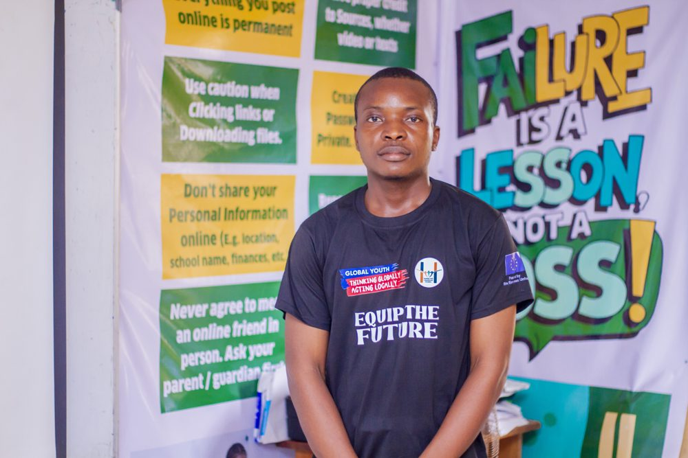

Law graduate — Governance researcher — Writer
Nigerian law graduate based in Uyo, researching anti-corruption law, whistleblower protection, and governance accountability across West Africa. Published in TheCable, Global Policy Journal, and International Law Blog.
Profile

I graduated from the University of Uyo Faculty of Law in 2025. My dissertation examined Nigeria's anti-corruption legal framework, and it left me with a question I have not stopped asking since: why does enforcement fail so consistently when the legislation says otherwise.
Most of my research sits at the intersection of anti-corruption institutional design, UNCAC implementation, and whistleblower protection. I am particularly interested in how the African human rights system treats people who report wrongdoing. The short answer is: not well. The longer answer is what I keep publishing about.
I also write fiction and personal essays. The best governance writing and the best storytelling do the same thing. They make you feel the weight of something you could previously walk past without noticing.
I interned at the Akwa Ibom State Ministry of Justice during my studies, and at Nwoko and Co, Access Law House, and Humanity Voice Foundation. I am open to research collaboration, legal commentary, policy writing, and editorial commissions.
From the work itself
I don't have client testimonials. I have lines from pieces that made readers stop scrolling.
"An error is a mistake that gets corrected when found. A vulnerability is a structural gap that can be exploited repeatedly because no one is required to check."
Issue 008 — The Fake Agency Budget
"Two out of every three naira the government collects goes straight to debt repayment. Before a hospital sees money. Before a road gets fixed. Before a teacher gets paid."
Issue 007 — N159 Trillion
"Twelve years is not a legal process. It is a deterrence strategy in reverse."
Issue 006 — The Two-Speed Justice System
Published Writing
TheCable
May 2026
Nigeria's federal whistleblowing policy has no statutory force. It cannot be enforced in any Nigerian court. This piece follows a former civil servant who used the government's own reporting channel and spent the next year losing his job, facing criminal charges, and having police sent to his home.
→
Global Policy Journal
University of Durham
June 2026
What happens to anti-corruption enforcement in West Africa when the external pressure that historically drove compliance withdraws, and which regional institutions actually step into that space.
→
International Law Blog
June 2026
Nigeria ratified a convention requiring statutory whistleblower protection in 2006. Three separate bills have died in committee since 2001. This piece argues that two decades of legislative inaction has crossed into a breach of binding treaty obligation.
→
IntLawGrrls
June 2026
UNCAC Article 33 only asks states to consider whistleblower protection, never to enact it. This piece argues the gap left by that soft language is not gender neutral.
→
BAC Afrocentric
Story Contest
1st Place, 2026
A story about what it costs to become who you were told you would be, and what you carry long after the ceremony is over.
→
Dear Aliens
Writing Contest
3rd Place, 2026
An international competition asked what single document you would send to arriving extraterrestrials. This piece placed third from thousands of global entries, and is about generators, Nigeria, and the talent for filling the space between what you have and what you need.
→
Corporate Compliance
Insights
July 2026
Most multinationals deploy internal reporting infrastructure as a uniform global system. This piece argues that assumption breaks down in Nigeria, where no statutory whistleblower protection exists.
→
Recognition
BAC Afrocentric Story Contest — The Weight of a Gown
1st Place, 2026
KB Foundation Essay Competition
1st Place, 2025
Dear Aliens International Writing Contest
3rd Place, 2026
Dafe Akpeye SAN Essay Competition, UniUyo Faculty of Law
Winner
Grooming Center Research Grant
2025
Blocklaw Consulting Essay Competition, UniUyo
2nd Position, 2026
PFF Essay Competition, Precious Fountain Foundation
2nd Runner Up, 2026
The Accountability Gap
One specific gap in Nigerian or West African accountability, every week. Not news. Not academic papers. Analysis written by someone who has read the statutes, followed the cases, and is not pretending any of this is fine.
The Portal Invites You. The Law Does Not Protect You.
Nigeria built a whistleblowing portal in 2016 and forgot to pass the law that would make using it safe.
Issue 002 — June 2026When Doing Nothing Becomes a Treaty Breach
Nigeria agreed in 2006 to protect whistleblowers by law. Twenty years later the law still does not exist.
Issue 003 — June 2026When the Extraterritorial Enforcer Steps Back
Anti-corruption enforcement in West Africa has always leaned on external pressure. What happens when it withdraws.
Issue 004 — June 2026Why Nigeria's Whistleblower Protection Bill Keeps Dying in Committee
Twenty five years, multiple bills, multiple assemblies. The bill still has not passed.
Issue 005 — June 2026Nigeria's Anti-Corruption Agencies Are Now Blaming the Courts
The EFCC secured 1,417 convictions in early 2025. The cases involving real money keep ending in acquittals.
Issue 006 — June 25, 2026The Two-Speed Justice System Nigeria Does Not Want to Talk About
60% of corruption cases against public officials remain unresolved. Cases involving governors take 6 to 15 years.
Issue 007 — July 2, 2026Nigeria Owes N159 Trillion. Nobody Is Required to Explain Why.
In four years Nigeria's debt grew by 380%. Two out of three naira collected goes to debt service.
Issue 008 — July 9, 2026Nigeria Just Found a Fake Government Agency in Its Own Budget
A fictitious council took N1.3 billion with no legal instrument of establishment. Nobody checked.
Issue 009 — July 16, 2026Nigeria's Budget Is Missing Two Percent of GDP. The IMF Had to Say So Out Loud.
Two percent of Nigeria's GDP in public spending never made it into the official budget documents.
Issue 010 — July 23, 2026Nigeria Has Been Recovering Stolen Assets for 27 Years. It Cannot Tell You Where Any of Them Are Now.
The House just admitted there is no register tracking what happens to what Nigeria recovers.
Issue 011 July 30, 2026The EFCC Wants to Investigate, Hold, and Sell the Same Seized Assets. Last Week's Story Explains Why That Should Worry You.
The Nigeria Association of Auctioneers says the EFCC has no legal right to be both custodian and seller of the vehicles it seizes. The same dispute happened during Ibrahim Magu's tenure. This time the commission does not appear to be backing down.
Read on this site →
Research Interests
Anti-Corruption Institutional Design
The gap between the EFCC and ICPC's structure on paper and their function in practice, and what a redesigned architecture would need to close it.
Whistleblower Protection
Why the AUCPCC obligation to legislate protection has gone unmet for nearly twenty years, and what the African human rights system could do about it.
Asset Recovery
Where POCA, UNCAC, and international cooperation frameworks quietly stop working, and what happens to funds after recovery is announced.
Governance Transparency
How information moves, or fails to move, between institutions and the people those institutions exist to serve.
Frequently Asked Questions
Nigerian and West African governance accountability. Specifically anti-corruption law, whistleblower protection, budget transparency, and asset recovery. I write both academic legal commentary and a weekly newsletter that translates the same issues for a general international audience.
Not yet. I graduated from the University of Uyo Faculty of Law in 2025 and am not currently NYSC enrolled. My published work is legal and policy analysis rather than legal practice, and is framed accordingly.
Citing with attribution is welcome. For republishing full pieces, syndication, or translation, email me directly and we can work out terms.
New issues publish every Thursday on this site. Bookmark the newsletter section above, or email me to be added to a direct notification list.
Yes. I take on legal commentary, policy writing, editorial commissions, and research collaboration, particularly anything touching anti-corruption law or governance accountability in West Africa. Email with as much detail on scope and timeline as you can give.
Contact
Based in Uyo, Akwa Ibom State, Nigeria — Available for remote collaboration worldwide